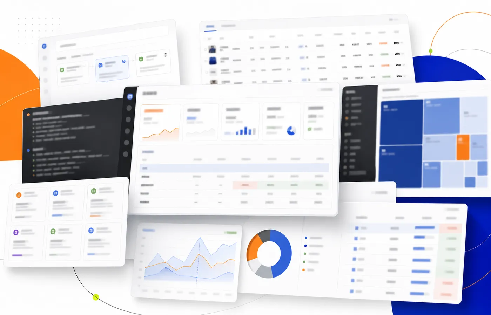

01 / ORGANIZATIONAI GOVERNANCE
≈31个 AI 项目
×6个治理阶段
让 AI 有入口、有责任、有退出机制
一期先完成登记闸门；使用透明、成本记录与风险洞察是完整治理链的下一阶段。
一期基础完成 · 后续能力不冒充已上线BUSINESS AI / RETAIL DIGITALIZATION
把商品、数据和流程中的真实问题，做成可以运行、验证并持续改善的产品。

THREE AI SYSTEMS
从 AI 如何进入组织、连接企业数据，到重构个人工作流：每一层都明确 AI、规则与人的边界。
一期先完成登记闸门；使用透明、成本记录与风险洞察是完整治理链的下一阶段。
一期基础完成 · 后续能力不冒充已上线身份、权限、受控查询、输出校验和审计进入同一条真实链路。
已运行 1 个月 · 首轮约 5 个字段校准发现岗位、理解 JD、生成草稿；用户确认后，系统才执行模拟沟通并完整留痕。
可运行本地产品 · Human-in-the-LoopHOW I BUILD
我的工作不是从页面开始，而是先找到真正需要被改变的业务决策。
WHAT CONNECTS THE WORK
把商品判断、数据规则、产品流程和 AI 能力连接成一条可落地的工作链。
把模糊需求翻译成可执行规则，再把系统结果送回经营现场。
THREE QUESTIONS
PROJECT ARCHIVE
我不把所有数字化项目都包装成 AI：这里区分纯代码业务系统、AI 增强系统、完整 AI Workflow 与 AI 治理。
WHAT I WANT TO CHANGE
减少重复整理和机械判断，让企划把更多时间放在商品结构、顾客需求和经营决策上，并用经营结果验证改变。
ABOUT
业务 AI 产品经理 / 零售数字化
我希望在真实零售业务中，用数据产品与 AI 改善商品企划、经营协作和决策效率。先理解业务为什么这样运转，再决定哪里值得被系统化、哪里适合使用 AI。